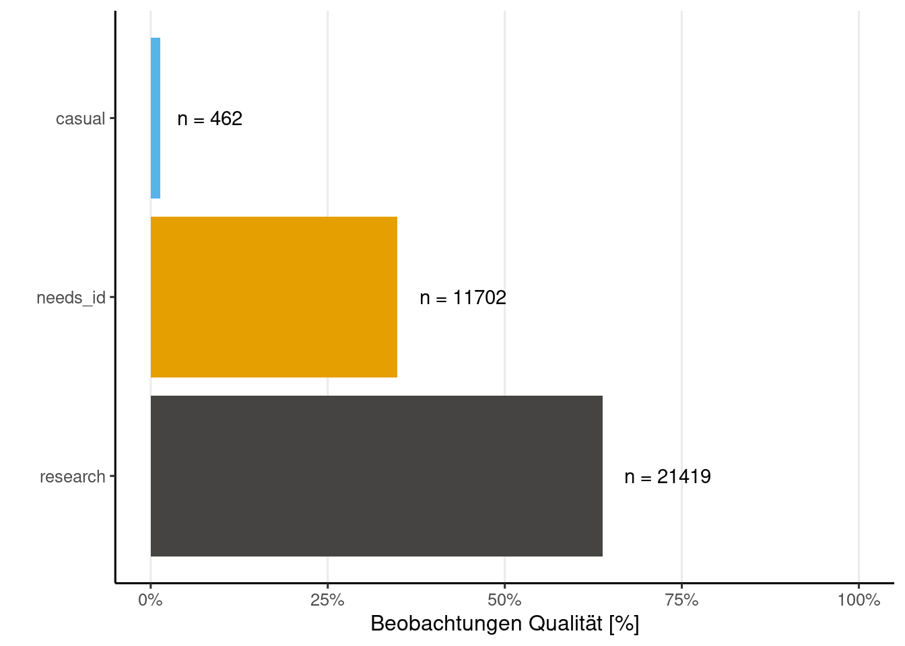

City Nature Challenge 2023: Graz bis Tierwelt Herberstein
Allgemeine Information
Insgesamt wurden 1058 Beobachtungen von 52 Beobachterinnen und Beobachtern hochgeladen. Das ergibt einen Mittelwert von 20.3 Beobachtungen pro Beobachter bzw. Beobachterin und einen Median von 7.5. Auf Spezies-Ebene wurden 385 Beobachtungen hochgeladen.

Beobachtungskarte
Fun Facts
User (auch bekannt als Birder) Franz Hillebrand hat 4 Beobachtungen hochgeladen - mehr als jede/r andere. Besonders liebt der User bzw. die Userin lienbacher die Art Helix pomatia, die er/sie bereits 17 Mal hochgeladen hat. Das Taxon mit dem längsten Namen ist Cylindroiulus caeruleocinctus, das 29 Zeichen lang ist.
Diversität Indexes
Die Biodiversität in einem Ökosystem kann durch verschiedene Indizes in der Ökologie gemessen werden, einer davon ist der Shannon-Index H` (Shannon-Weaver-Index). Dieser Index misst die Diversität von Arten in einem Ökosystem und liegt zwischen 0 und 1. Je höher der Index, desto größer ist die Diversität bzw. je geringer die Chance, noch einmal die gleiche Art zu entdecken.
In unserem Datensatz können wir den Shannon-Index H` für die Ordnung Insecta berechnen: 0.08. Die Anzahl der Arten in dieser Ordnung beträgt 167.
Zusätzlich können wir mit diesen Kennzahlen den Evenness-Index berechnen, der in unserem Fall 0.02 ist.
Top 10 Beobachter/innen
In dieser Liste werden auch doppelte Beobachtungen gezählt, jedoch sollte dies nicht als Tipp betrachtet werden, um an erster Stelle zu stehen.
?(caption)
Top 10 Taxa (Spezies-Ebene)
In dieser Liste sind die am häufigsten beobachteten Taxa auf Spezies-Ebene aufgeführt, die bereits identifiziert wurden. Es ist jedoch nicht erforderlich, dass diese von einer zweiten Person bestätigt wurden, um den Forschungsstandard (Research-Grade) zu erreichen.
?(caption)
Unique Taxa mit Research-Grade
Besonders erfreulich sind natürlich immer einzigartige Funde, die nur von einer Person in der Challenge hochgeladen wurden. In dieser Liste müssen jedoch alle Spezies von einer zweiten Person bestätigt werden, um den Forschungsstandard (Research-Grade) zu erreichen.
?(caption)
Beobachtungs Qualität
iNaturalist unterteilt die Beobachtungsqualität in drei Kategorien. Die Kategorie “causal” umfasst Beobachtungen, bei denen mindestens eines der folgenden Elemente fehlt: das Datum der Beobachtung, der Beobachtungsort oder ein Foto (oder Tonaufnahme). Die Kategorie “needs_id” wird angezeigt, bis mindestens zwei Personen eine Spezies für diesen Upload einstimmig bestimmt haben, ohne Widerspruch. Die letzte und wertvollste Kategorie ist “research”, die bestätigte Beobachtungen auf Spezies-Ebene umfasst.

Beobachtungen Phylum

Insecta - Ordnungen

Beobachtungen mit Konflikt Bestimmungen
?(caption)
Rote Liste
Anmerkung: Keine Ahnung wie aktuell meine Rote Liste ist.
?(caption)
?(caption)